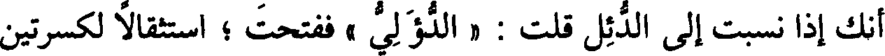
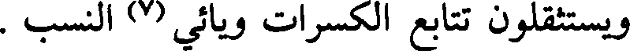
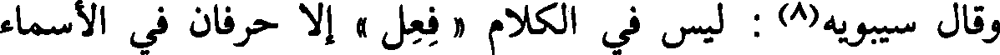
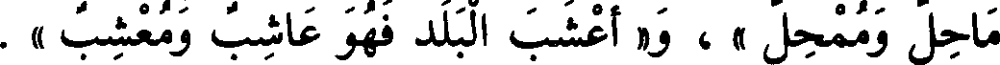
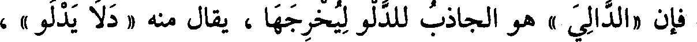
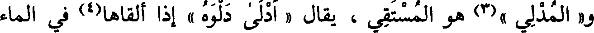
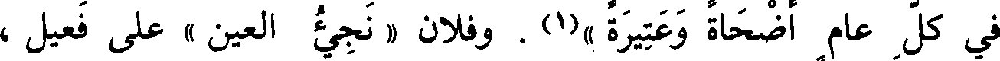
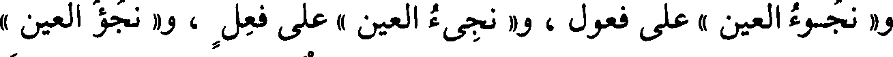
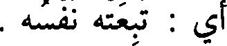
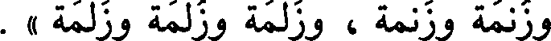

File: 000307.gt.txt (if the image is defective, simply delete all Arabic text and the line will be excluded)

جاؤا بجمع (4) لو قيس معرسه ما كان إلا كمعرس الدئل
File: 000308.gt.txt (if the image is defective, simply delete all Arabic text and the line will be excluded)

قال(5) : وبها سميت قبيلة أبي الأسود الدؤلي ، وهي من كنانة ، إلا
File: 000309.gt.txt (if the image is defective, simply delete all Arabic text and the line will be excluded)

أنك إذا نسبت إلى الدئل قلت : « الدؤلي » ففتحت ؛ استثقالا لكسرتين
File: 000310.gt.txt (if the image is defective, simply delete all Arabic text and the line will be excluded)

بعد ضمة ويائي النسب ، قال : ولذلك تنسب إلى إبل فتقول : « إبلي » ،
File: 000311.gt.txt (if the image is defective, simply delete all Arabic text and the line will be excluded)

ويستثقلون تتابع الكسرات ويائي (7) النسب .
File: 000312.gt.txt (if the image is defective, simply delete all Arabic text and the line will be excluded)

وقال سيبويه(8) : ليس في الكلام « فعل » إلا حرفان في الأسماء
File: 000313.gt.txt (if the image is defective, simply delete all Arabic text and the line will be excluded)

« إبل » و « حبر » وهو القلح في الأسنان ؛ قال أبو محمد : وقد جاء
File: 000314.gt.txt (if the image is defective, simply delete all Arabic text and the line will be excluded)

« إطل «» ،وهو الخاصرة ، وحرف في الصفة ، قالوا : امرأة « بلز »، وهي
File: 000315.gt.txt (if the image is defective, simply delete all Arabic text and the line will be excluded)

الضخمة(9) . [611] .
File: 000316.gt.txt (if the image is defective, simply delete all Arabic text and the line will be excluded)

وقال سيبويه(10): ليس في الكلام « فعل » وصف ، إلا حرف من
File: 000317.gt.txt (if the image is defective, simply delete all Arabic text and the line will be excluded)

ومما جاء الاسم منه على « فاعل » و « مفعل » : « أمحل البلد فهو
File: 000318.gt.txt (if the image is defective, simply delete all Arabic text and the line will be excluded)

ماحل وممحل » ، و« أعشب البلد فهو عاشب ومعشب » .
File: 000319.gt.txt (if the image is defective, simply delete all Arabic text and the line will be excluded)

و « أغضى الليل فهو غاض ومغض » ، قال رؤبة(1) :
File: 000320.gt.txt (if the image is defective, simply delete all Arabic text and the line will be excluded)

يخرجن من أجواز ليل غاض
File: 000321.gt.txt (if the image is defective, simply delete all Arabic text and the line will be excluded)

أي : مغض .
File: 000322.gt.txt (if the image is defective, simply delete all Arabic text and the line will be excluded)

وأما قول العجاج(2) :
File: 000323.gt.txt (if the image is defective, simply delete all Arabic text and the line will be excluded)

يكشف عن جماته دلو الدال [635]
File: 000324.gt.txt (if the image is defective, simply delete all Arabic text and the line will be excluded)

فإن «الدالي » هو الجاذب للدلو ليخرجها ، يقال منه « دلا يدلو » ،
File: 000325.gt.txt (if the image is defective, simply delete all Arabic text and the line will be excluded)

و« المدلي »(3) هو المستقي ، يقال « أدلى دلوه » إذا ألقاها(4) في الماء
File: 000326.gt.txt (if the image is defective, simply delete all Arabic text and the line will be excluded)

قال : فأراد : يكشف عن الماء دلو المستقي .
File: 000327.gt.txt (if the image is defective, simply delete all Arabic text and the line will be excluded)

ويقال : « اعقت الفرس » فهي « عقوق » ولا يقال(7 « معق »
File: 000328.gt.txt (if the image is defective, simply delete all Arabic text and the line will be excluded)

و« أنتجت » فهي « نتوج » ولا يقال7) « منتج » .
File: 000329.gt.txt (if the image is defective, simply delete all Arabic text and the line will be excluded)

في كل عام أضحاة وعتيرة »(1) . وفلان « نجيء العين » على فعيل ،
File: 000330.gt.txt (if the image is defective, simply delete all Arabic text and the line will be excluded)

و« نجوء العين » على فعول ، و« نجيء العين » على فعل ، و« نجؤ العين »
File: 000331.gt.txt (if the image is defective, simply delete all Arabic text and the line will be excluded)

على فعل ، إذا كان شديد العين ، يقال : قد نجأته(2) بعيني ، و« ردوا نجأة
File: 000332.gt.txt (if the image is defective, simply delete all Arabic text and the line will be excluded)

السائل بشيء(3) » ، وأسمحت(4) « قرونه ، وقرينه ، وقرونته ، وقرينته »
File: 000333.gt.txt (if the image is defective, simply delete all Arabic text and the line will be excluded)

باب ما جاء فيه خمس لغات
File: 000334.gt.txt (if the image is defective, simply delete all Arabic text and the line will be excluded)

من حروف مختلفة الأبنية
File: 000335.gt.txt (if the image is defective, simply delete all Arabic text and the line will be excluded)

أي : تبعته نفسه .
File: 000336.gt.txt (if the image is defective, simply delete all Arabic text and the line will be excluded)

« الشمال والشمال والشامل والشمل والشمل » ، و« أفرة الحر وافرة
File: 000337.gt.txt (if the image is defective, simply delete all Arabic text and the line will be excluded)

[599] وفرة وعفرة وعفرة» وهي شدة الحر ، ويقال : أوله ، وطال « طولك
File: 000338.gt.txt (if the image is defective, simply delete all Arabic text and the line will be excluded)

وطيلك وطولك وطيلك وطولك » .
File: 000339.gt.txt (if the image is defective, simply delete all Arabic text and the line will be excluded)
باب ما جاء فيه ست لغات
File: 000340.gt.txt (if the image is defective, simply delete all Arabic text and the line will be excluded)

« فسطاط وفسطاط وفستاط وفستاط(5) وفساط وفساط » ؛ و« رغوة
File: 000341.gt.txt (if the image is defective, simply delete all Arabic text and the line will be excluded)

اللبن ورغوة ورغاوة ورغاوة ورغاية » ، ويقال : « أرز » و « أرز »
File: 000342.gt.txt (if the image is defective, simply delete all Arabic text and the line will be excluded)

و« أرز » مثل كتب ، و« أرز » مثل كتب ، و« رز » و« رنز » ، وهو العبد « زنمة
File: 000343.gt.txt (if the image is defective, simply delete all Arabic text and the line will be excluded)

وزنمة وزنمة ، وزلمة وزلمة وزلمة » .
File: 000344.gt.txt (if the image is defective, simply delete all Arabic text and the line will be excluded)

مفعل ومفعل
File: 000345.gt.txt (if the image is defective, simply delete all Arabic text and the line will be excluded)

قال الكسائي : يقال « المشعر الحرام » و « المشعر الحرام(1)»، وأكثر
File: 000346.gt.txt (if the image is defective, simply delete all Arabic text and the line will be excluded)

العرب على كسرها ، ولا يقرأ بذلك(2) ، ولا يعرف(3) غير هذا الحرف .
File: 000347.gt.txt (if the image is defective, simply delete all Arabic text and the line will be excluded)

وأكثر ما جاء - مما يستعمل مكسور الميم - نحو « مقطع »
File: 000348.gt.txt (if the image is defective, simply delete all Arabic text and the line will be excluded)

و«مبضع »(4) و « مخرز » و « محلب » للقدح الذي يحلب فيه ؛ فإن جعلت
File: 000349.gt.txt (if the image is defective, simply delete all Arabic text and the line will be excluded)

شيئا من هذا مكانا فتحت الميم ؛ فالمقطع : الموضع الذي يقطع فيه ،
File: 000350.gt.txt (if the image is defective, simply delete all Arabic text and the line will be excluded)

والمقطع : الشيء الذي يقطع به ، و « المقص » : الموضع الذي يقص
File: 000351.gt.txt (if the image is defective, simply delete all Arabic text and the line will be excluded)

فيه ، والمقص : المقراض ، و « المفتح » : الموضع الذي يفتح فيه ،
File: 000352.gt.txt (if the image is defective, simply delete all Arabic text and the line will be excluded)

والمفتح : المفتاح ، وكذلك إن جعلت شيئا من هذا مصدرا فهو مفتوح .
File: 000353.gt.txt (if the image is defective, simply delete all Arabic text and the line will be excluded)

مفعل ومفعل
File: 000354.gt.txt (if the image is defective, simply delete all Arabic text and the line will be excluded)

قالوا : « منخل ومنخل » و « منصل ومنصل » للسيف ، وهذا مما
File: 000355.gt.txt (if the image is defective, simply delete all Arabic text and the line will be excluded)

يستعمل وأوله مضموم ، ومما ضم من هذا الفن أوله « مسعط » و« مدهن »
File: 000356.gt.txt (if the image is defective, simply delete all Arabic text and the line will be excluded)

و«مكحلة » ولا يقال فيه غير ذلك .